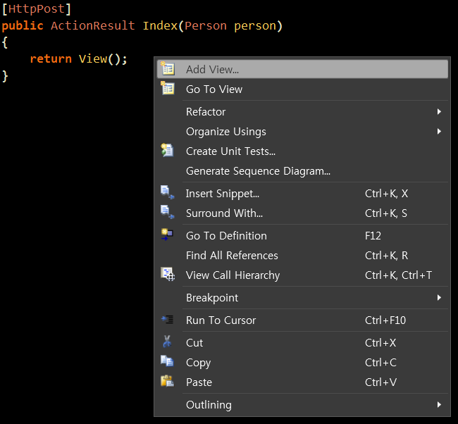
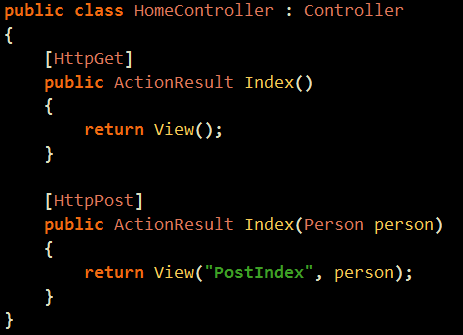

HttpPost With Model & View
지난시간에 string으로 Post페이지를 만들었는데요.
오늘은 다시 이녀석을 ActionResult로 만드신 뒤에 『Add View』상콤하게 해줍니다. ㅎㅎ

그리고 이름은 간단히 PostIndex라고 주었어요.
Model도 연동을 해주었구요 ㅎㅎ
자, 그럼 다음과 같은 View가 만들어지죠 .. ?
이제 간단히 디자인을 해줍니다. ㅎㅎ
근데 문제가 있어요 ...
실행시켜보시면 아시겠지만 처리하고 가지요.
View()를 리턴하면 액션의 이름과 같은 녀석을 View로 사용하게된답니다.
즉, 위에서 Submit을 해도 다시 Index.cshtml 페이지가 된다는 말이지요.
"헐, 그럼 어떻게해요...!"
『8개나 오버라이드 되어 있네요. 어딘가에는 우리가 원하는 메소드가 있겠지요.』
6번째를 보시면 다음과 같은 녀석이 있답니다.
(원래 설명이 굉장히 길어서 강의에 올리기 힘들어 일부로 자르느라 설명이 안 뜬 것이니 직접 하고 읽어보세요 ㅎㅎ)
ViewName을 넣어주었구요.
Model 또한 넣어주었답니다.

이제 완성되었구요.
실행을 시키시면 된답니다.
질문 : HttpGet은 !ispostBack 같은 거고 HttpPost는 ispostBack 같은거군요....
답 : 그렇습니다.